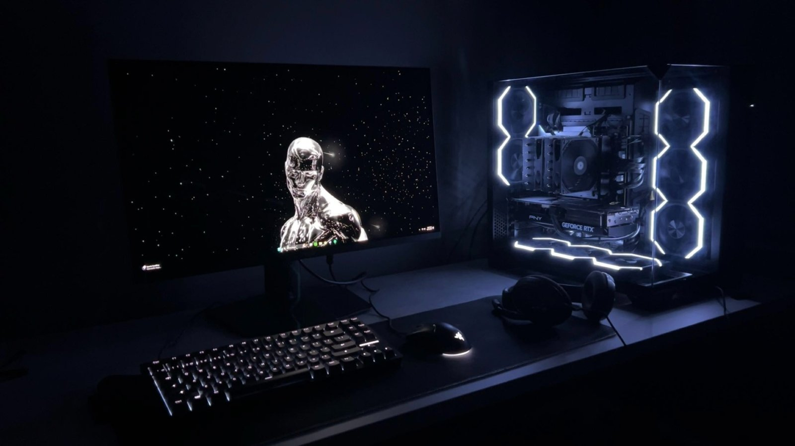
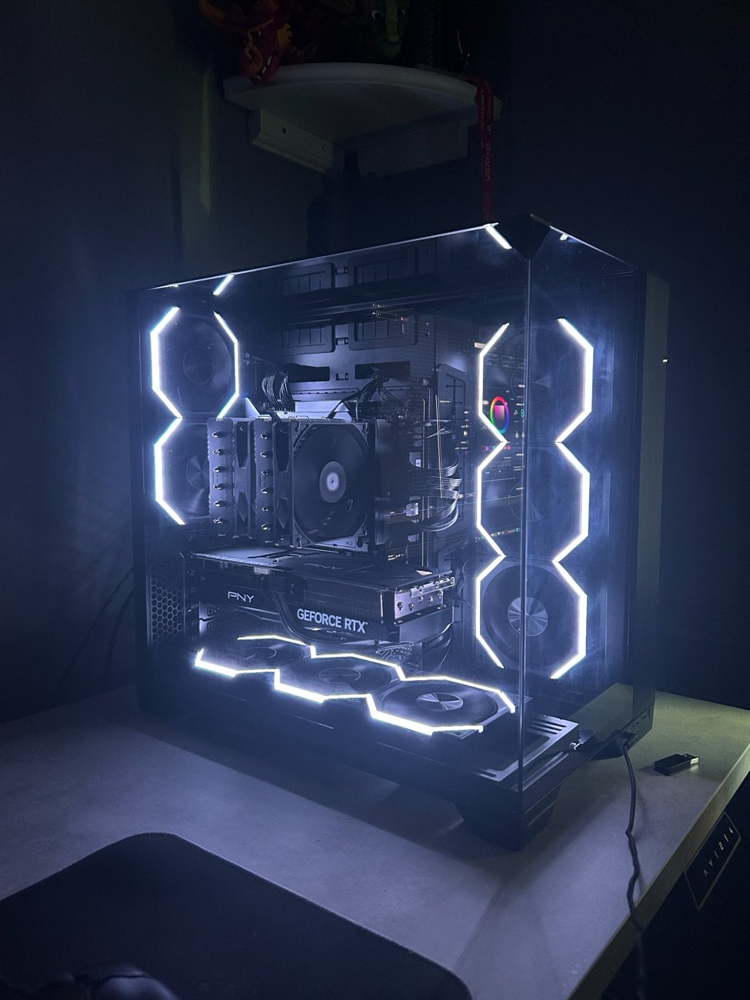
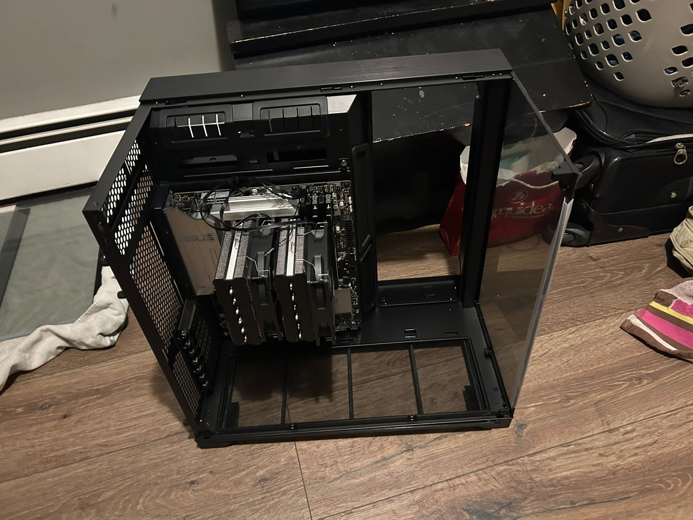
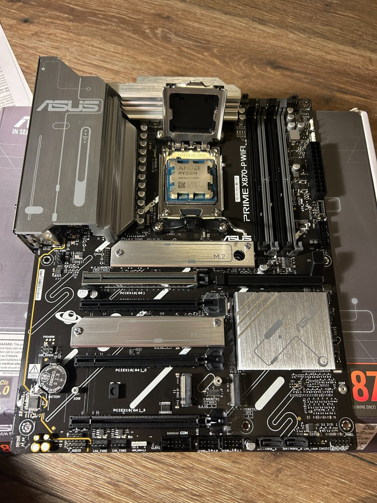
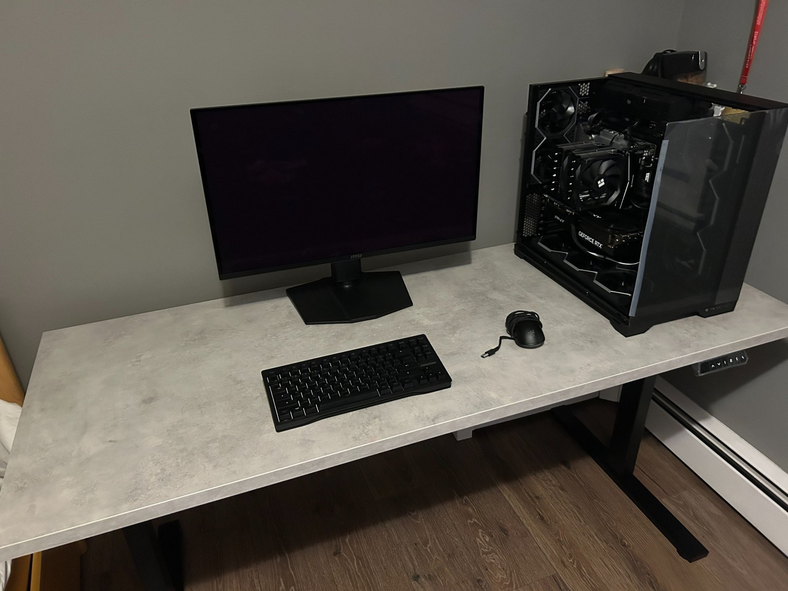

Personal PC & Workstation
Component research, computer assembly, airflow troubleshooting, and desk setup for a 1440p gaming workstation.

Project overview
I researched and assembled a desktop PC for gaming at 1440p. I tracked parts, prices, and store links in my phone's notes, then compared CPU and GPU benchmarks through articles and videos before buying components.
Component selection
I chose an RTX 5070 Ti partly for its frame-generation support and selected a Ryzen 7 9700X to pair with it. My decisions balanced game performance, compatibility, cost, and the setup I wanted to build.
Assembly and troubleshooting
I assembled the PC myself. During the build, I found that some case fans had the wrong blade orientation for the airflow layout I wanted. I held a piece of paper near the fans to check airflow direction, then ordered and installed the appropriate forward- and reverse-blade replacements.
Workstation setup
I also researched the monitor, desk, and peripherals. I wanted a 1440p OLED monitor and assembled my desk from a separate tabletop and legs. The final workstation was part of the same planning process.
Project gallery
Select any photo to view the full, uncropped image. Use the arrows to browse.



